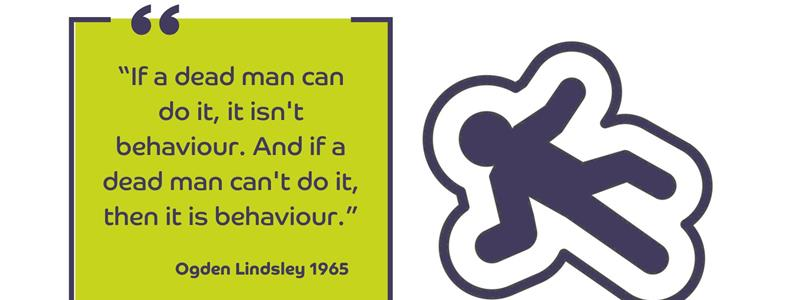

Protocolo LIMA: Por que ‘Dominar’ seu Cão é Tão Útil Quanto Gritar com uma Planta¶
Um guia técnico, sem abraçadores de árvores e sem generais de quartel, sobre como o cérebro canino realmente aprende.

1. Introdução: O que diabos é LIMA?¶
(E por que seu cão não está planejando um golpe de estado)
LIMA é um acrônimo para “Least Intrusive, Minimally Aversive” (Menos Intrusivo, Minimamente Aversivo).
Não é uma “dica”. É uma estrutura ética e procedimental adotada pelas maiores organizações de comportamento animal do mundo (IAABC, APDT, CCPDT). É o padrão-ouro porque remove o “achismo” e insere a análise de dados.
Muitos adestradores confundem “ferramenta” (clicker, petisco, enforcador) com “estratégia”.
- Ferramenta: É o martelo.
- Estratégia (LIMA): É a engenharia que diz se você precisa do martelo ou se um ajuste de parafuso resolve.
O Que o LIMA NÃO ɶ
Vamos tirar o elefante da sala (ou o lobo, se preferir): LIMA não é um método de adestramento “fofinho” onde cantamos Kumbaya e esperamos o cachorro decidir parar de comer o sofá.
Desmistificando o LIMA
- ❌ Não é sobre ser “bonzinho”: O LIMA não foi criado para poupar os sentimentos do cachorro, mas para garantir a eficiência do processo.
- ❌ Não é “Permissividade”: Não significa deixar o cão fazer o que quiser. Significa ensinar limites sem precisar declarar guerra.
- ❌ Não é ausência de aversivos: A vida é aversiva. A gravidade é aversiva. O LIMA foca em minimizar o uso intencional deles no treino.
O Conceito Técnico de “Intrusão”¶
Aqui está a chave que a maioria dos cursos superficiais ignora. Intrusão não é sinônimo apenas de dor física.
Definição Técnica: Intrusão
Intrusão é o nível de controle externo que você impõe sobre a autonomia do animal.
Quanto mais você precisa manipular fisicamente o cão (empurrar a bunda para sentar, puxar a guia para vir), mais intrusivo você é.
Por que isso importa biologicamente?
- Aprendizado Ativo (Baixa Intrusão): Quando o cão escolhe sentar para ganhar algo, o cérebro cria conexões neurais robustas (Córtex Pré-Frontal). Ele aprendeu a lógica.
- Aprendizado Passivo/Coercitivo (Alta Intrusão): Quando você obriga o cão a sentar, o cérebro dele está focado em evitar a pressão, não na ação de sentar.
Metáfora da Triagem Médica¶
Imagine que você chega ao hospital com uma dor de cabeça forte. O médico segue um protocolo (uma hierarquia de intervenção):
| Nível de Intervenção | Ação do Médico | Equivalente no Adestramento (LIMA) |
|---|---|---|
| 1. Gestão/Básico | Você bebeu água? Dormiu bem? | O cão passeou? Comeu? Está com dor? |
| 2. Baixa Invasão | Tome este analgésico oral. | Reforço positivo / gestão de ambiente. |
| 3. Alta Invasão | Vamos abrir seu crânio agora. | Punição positiva (choque/enforcador). |

Se um médico sugere uma craniotomia antes de oferecer um copo d’água, ele não é um médico “raiz” ou “prático”. Ele é um açougueiro incompetente e perderia a licença.
Por que “Funcionar” não basta?¶
Sim, punição funciona. Se eu te der um choque toda vez que você errar a tabuada, você aprende rápido. Mas você também aprende a: 1. Me odiar. 2. Ter ansiedade crônica. 3. Parar de tentar coisas novas (desamparo aprendido).
Dra. Susan Friedman
“Effectiveness is not enough.” (Eficácia não é suficiente).
A questão não é se o cão parou o comportamento. A questão é: A que custo?
2. A “Humane Hierarchy”: O Protocolo de Segurança¶
Imagine que você vai construir uma casa. Existe uma ordem obrigatória: Fundação -> Paredes -> Telhado. Tentar colocar o telhado antes da fundação não é “estilo de construção”, é desabamento.
A Humane Hierarchy (Hierarquia Humana) funciona igual. É uma escada que o treinador deve subir, degrau por degrau.
A Escada de Intervenção (Do Básico ao Drástico)¶
- Saúde, Nutrição e Físico (A Fundação)
- A Lógica: Comportamento é produto do corpo. Um cão com dor de dente morde. Comida ruim afeta o cérebro.
- Antecedentes: Gestão de Ambiente (O Cenário)
- A Lógica: Se o cão rói a mesa, tire a mesa ou dê brinquedos. Mude o ambiente para facilitar o acerto.
- Reforço Positivo (R+) (O Salário)
- A Lógica: Adicionar algo bom logo após o acerto. Libera Dopamina. É a única etapa que ensina o que fazer.
- Reforço Diferencial (A Troca)
- A Lógica: Premiar um comportamento que torna o “erro” impossível. (Ex: Ficar na cama vs Pular nas visitas).
- Extinção, Reforço Negativo e Punição Negativa (A Multa)
- Zona de Cuidado: Tirar atenção ou ignorar.
- Punição Positiva (P+) (A Cirurgia de Risco)
- A Lógica: Adicionar dor ou susto. Gera Cortisol. Só considerada se TUDO falhou e há risco grave.
| Etapa | Abordagem LIMA (Hierárquica) | Abordagem "Tradicional" (Força) |
|---|---|---|
| Análise Inicial | O equipamento machuca? Ele gastou energia antes de sair? (Nível 1 e 2) | "Ele quer mandar em mim." (Mito de dominância) |
| Ação Imediata | Usar peitoral confortável + Premiar quando a guia está frouxa. (Nível 3) | Dar trancos no pescoço cada vez que ele estica a guia. (Nível 6) |
| Resultado no Cérebro | Motivação: "Andar perto do dono traz coisas boas." | Medo: "Se eu andar rápido, meu pescoço dói." |
| Consequência | Cão atento e feliz. | Cão ansioso ou agressivo na rua. |

3. O Teste do Homem Morto (The Dead Man’s Test)¶
Existe uma regra de ouro na ciência comportamental chamada “Teste do Homem Morto”:
Regra de Ouro
“Se um homem morto consegue fazer, então isso não é comportamento.”

Vamos aplicar isso ao adestramento tradicional: * “Quero que ele não pule.” (Um homem morto não pula). * “Quero que ele não lata.” (Um homem morto não late). * “Quero que ele não puxe a guia.” (Um homem morto não puxa).
Se o seu plano de treino se resume a dizer “NÃO”, você está treinando o cachorro para ser um cadáver.
O “Porquê” Biológico (Ação = Dopamina)¶
O sistema de recompensa do cérebro funciona melhor quando o animal tem uma tarefa clara a cumprir.
| O que o dono pede (Erro do Homem Morto) | O que o Especialista LIMA prescreve (Ação Concreta) | Por que funciona? |
|---|---|---|
| "Não pule nas visitas!" | "Quando a campainha tocar, vá para sua caminha." | Dá uma tarefa. Impossível pular e estar na cama ao mesmo tempo. |
| "Pare de roer o sofá!" | "Venha roer este osso recheado aqui." | Redireciona a necessidade natural para o lugar certo. |
| "Não puxe a guia!" | "Olhe para mim enquanto andamos." | Cria conexão e foco, em vez de apenas evitar o tranco. |

4. O “M” de Minimamente Aversivo: A Realidade Nua e Crua¶
O LIMA não proíbe a realidade, ele gerencia o risco. Aversivo não é só dor, é qualquer coisa que o cão queira evitar. E o custo de usar isso errado é alto: chama-se Fallout.
A regra é: você deve usar a menor força necessária para atingir o objetivo, e somente depois de ter construído uma base sólida com recompensas.
1. Aversivo é Subjetivo (O Cão Decide)¶
Quem define o que é aversivo é o receptor (o cão). * Borrifar água num Labrador que ama água = Reforço Positivo (Erro). * Falar "Não" grosso para um Border Collie sensível = Punição Severa.
2. A Armadilha da Rapidez (Supressão vs. Resolução)¶
Ferramentas punitivas funcionam rápido porque geram Supressão de Comportamento. Você tirou o aviso (o rosnado), mas manteve a emoção (o medo/raiva). É como tirar a bateria do detector de fumaça durante um incêndio.

3. O “Fallout” (Efeitos Colaterais)¶
Perigo: Fallout
Quando você usa aversivos como método principal, corre três riscos graves:
- Agressão Redirecionada: O cão ataca o que estiver perto quando sente dor.
- Apatia Aprendida (Desamparo): O cão desiste de tentar e vira um “robô” deprimido.
- Perda de Confiança: Você vira uma fonte de ameaça imprevisível.
| Ação | O que o Humano Vê | O que o Cão Sente (Biologia) | Prognóstico Futuro |
|---|---|---|---|
| Puxão na Guia (Tranco) | "Ele parou de puxar agora." | Pico de Cortisol + Dor na traqueia. | Medo de passear ou agressividade. |
| Grito / Susto | "Ele me obedeceu." | Ativação da Amígdala (Centro do Medo). | Cão reativo, morde se surpreendido. |
| LIMA (Gestão + Recompensa) | "Demora um pouco mais." | Construção de Sinapses + Confiança. | Comportamento estável e duradouro. |
5. Conclusão: Ética é Eficiência¶
Se você absorveu a lógica até aqui, percebeu que o Protocolo LIMA não é um manifesto ideológico. É um protocolo de gestão de risco e eficiência.
Construir um comportamento usando punição é como consertar uma ponte usando fita adesiva. É rápido e barato, mas você teria coragem de passar com seu carro por cima dela daqui a um ano?
O LIMA é a engenharia calculada: demora mais para projetar, mas a ponte não cai.
6. Referências Bibliográficas¶
- Friedman, S. G. (2009). “What’s Wrong With This Picture? Effectiveness Is Not Enough”. Journal of Applied Companion Animal Behavior. (A base científica sobre por que "funcionar" não é suficiente).
- Sidman, Murray (2009). Coerção e suas Implicações. Editora Livro Pleno. (Tradução obrigatória de "Coercion and Its Fallout", detalhando os efeitos colaterais da punição).
- Pryor, Karen (2006). Não Atire no Cão! A Nova Arte de Ensinar e Treinar. Zahar. (O clássico que traduziu Skinner para o público geral).
- IAABC, APDT, CCPDT (2019). “Joint Standards of Practice: The Least Intrusive, Minimally Aversive (LIMA) Approach”. (Documento oficial do protocolo).
- Moreira, M. B., & Medeiros, C. A. (2007). Princípios Básicos de Análise do Comportamento. Artmed. (Referência brasileira fundamental para entender reforço, punição e extinção).
- Todorov, J. C. (2001). "A psicologia como o estudo de interações". Psicologia: Teoria e Pesquisa. (Artigo acadêmico brasileiro sobre a análise funcional do comportamento).
- Overall, K. L. (2013). Manual of Clinical Behavioral Medicine for Dogs and Cats. Elsevier Health Sciences.